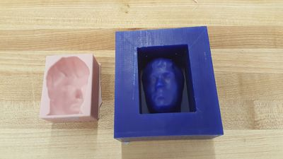
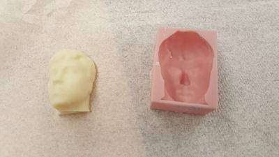

Using CorelDraw I created designs for the front, and back of the skateboard. I used the laser cutter to engrave these designs from CorelDraw
on to the skateboard wood. To create the board itself I had to use glue to put 7 pieces of wood together.
Each piece of wood has its own grain some provide for flex and some provide more strength to the skateboard.
To create the bend of the skateboard I used a vaccum bag to bend the skateboard while the glue was drying. Finally, once the board was dry and shaped
properly, I put a shiney coating on the wood to finish the wood.
Our second task was to create a mold of our head that we could later form into a chocolate bar of our own head. Using the previous head scan from the
3D Printing project I was able to make a mold design on Meshmixer. With a block of wax, we used subtractive manufacturing to drill the
design into the wax. Then I used liquid silcone to fill the drilled wax. Finally I got warmed white chocolate to fill the mold of my face, and put it in the fridge
to cool down and harden. I was able to create an exact candy bar of my face, and got to eat it.


Return